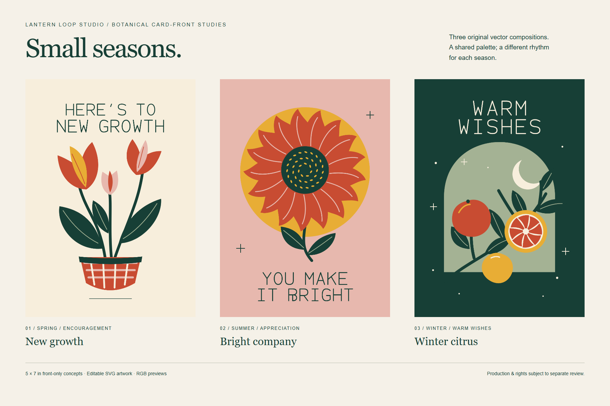
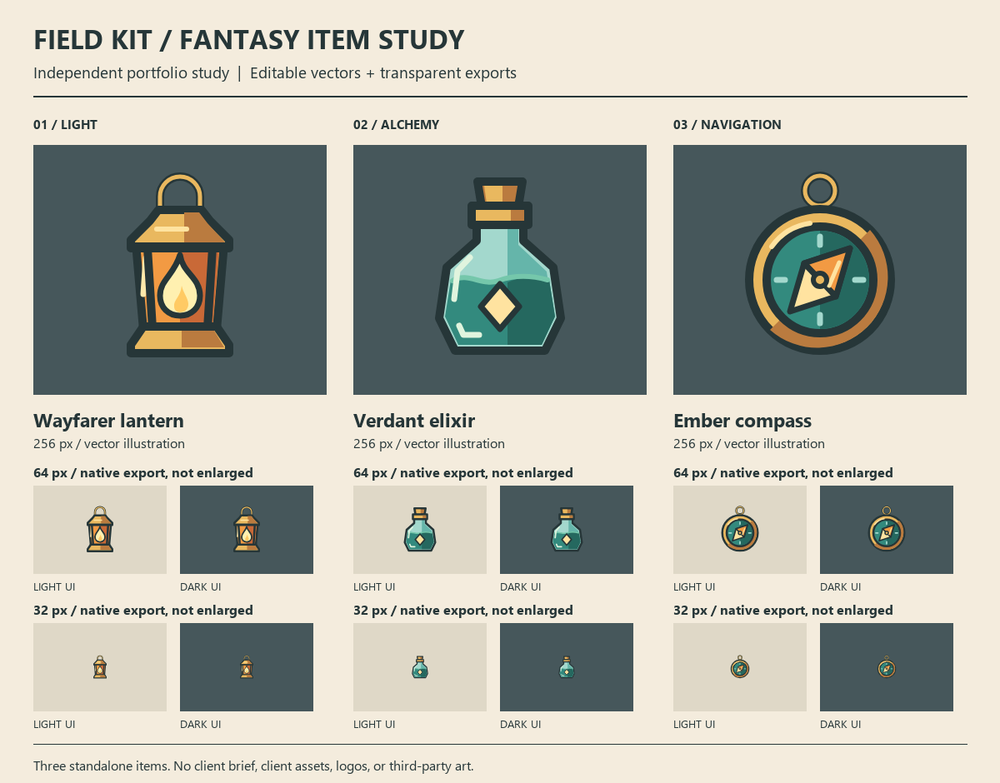

Lantern Loop Studio / portfolio
Small studies.
Clear shapes.
Independent vector-design examples, not previous client commissions.
Small seasons
Three coordinated botanical greeting-card concepts: New growth, Bright company and Winter citrus.

Open the full gallery and editable-vector previews
5 × 7 inch front-only concepts. RGB screen previews; bleed, backs, interiors, printer colour profiles and physical proofs are not included. Greetings are editable vector paths, not live-font text. No seamless repeat is claimed.
Field kit
A Wayfarer lantern, Verdant elixir and Ember compass, constructed as a consistent set of editable vector item illustrations.

Open the full-resolution comparison sheet · View on a light background


Transparent exports were checked at 32–512 pixels. Fine details need 64 pixels or more; very dark backgrounds need contrast treatment. No game-engine integration, animation or painterly illustration is represented.